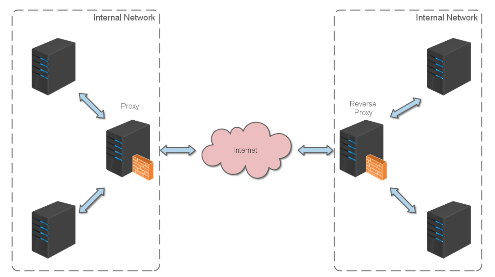
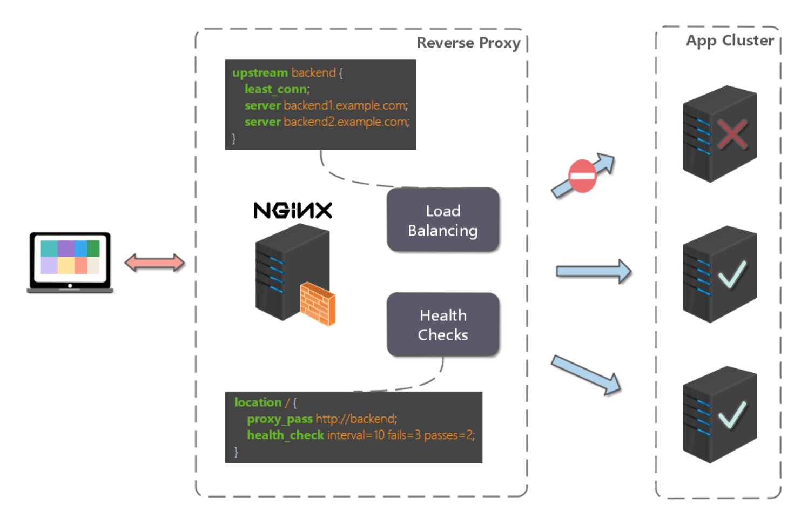

docker部署
拉取镜像
docker pull nginx:latest
运行镜像
docker run --name nginx -p 80:80 -d nginx
创建挂载目录
mkdir -p ~/Documents/dockerdata/nginx/conf /
mkdir -p ~/Documents/dockerdata/nginx/conf.d /
mkdir -p ~/Documents/dockerdata/nginx/html /
mkdir -p ~/Documents/dockerdata/nginx/log /
拷贝容器里面的内容
docker cp nginx:/etc/nginx/nginx.conf ~/Documents/dockerdata/nginx/conf/nginx.conf /
docker cp nginx:/etc/nginx/conf.d ~/Documents/dockerdata/nginx /
docker cp nginx:/usr/share/nginx/html ~/Documents/dockerdata/nginx /
停止并关闭容器
docker rm -f nginx
重新启动容器
docker run --name nginx -p 80:80 --privileged --restart=always \
-v ~/Documents/dockerdata/nginx/conf/nginx.conf:/etc/nginx/nginx.conf:rw \
-v ~/Documents/dockerdata/nginx/conf.d:/etc/nginx/conf.d:rw \
-v ~/Documents/dockerdata/nginx/html:/usr/share/nginx/html:rw \
-v ~/Documents/dockerdata/nginx/log:/var/log/nginx \
-d nginx
Nginx 入门
常用命令
nginx -s stop 快速关闭Nginx，可能不保存相关信息，并迅速终止web服务。
nginx -s quit 平稳关闭Nginx，保存相关信息，有安排的结束web服务。
nginx -s reload 因改变了Nginx相关配置，需要重新加载配置而重载。
nginx -s reopen 重新打开日志文件。
nginx -c filename 为 Nginx 指定一个配置文件，来代替缺省的。
nginx -t 不运行，仅仅测试配置文件。nginx 将检查配置文件的语法的正确性，并尝试打开配置文件中所引用到的文件。
nginx -v 显示 nginx 的版本。
nginx -V 显示 nginx 的版本，编译器版本和配置参数。
实战
http反向代理
介绍：
反向代理（Reverse Proxy）方式是指以代理服务器来接受 internet 上的连接请求，然后将请求转发给内部网络上的服务器，并将从服务器上得到的结果返回给 internet 上请求连接的客户端，此时代理服务器对外就表现为一个反向代理服务器。
不考虑复杂的配置，仅仅是完成一个 http 反向代理。
#运行用户
#user somebody;
#启动进程,通常设置成和cpu的数量相等
worker_processes 1;
#全局错误日志
error_log /var/log/nginx/error.log;
error_log /var/log/nginx/notice.log notice;
error_log /var/log/nginx/info.log info;
#PID文件，记录当前启动的nginx的进程ID
#pid D:/Tools/nginx-1.10.1/logs/nginx.pid;
#工作模式及连接数上限
events {
worker_connections 1024; #单个后台worker process进程的最大并发链接数
}
#设定http服务器，利用它的反向代理功能提供负载均衡支持
http {
#设定mime类型(邮件支持类型),类型由mime.types文件定义
include include /etc/nginx/mime.types;
default_type application/octet-stream;
#设定日志
log_format main '[$remote_addr] - [$remote_user] [$time_local] "$request" '
'$status $body_bytes_sent "$http_referer" '
'"$http_user_agent" "$http_x_forwarded_for"';
access_log /var/log/nginx/access.log main;
rewrite_log on;
#sendfile 指令指定 nginx 是否调用 sendfile 函数（zero copy 方式）来输出文件，对于普通应用，
#必须设为 on,如果用来进行下载等应用磁盘IO重负载应用，可设置为 off，以平衡磁盘与网络I/O处理速度，降低系统的uptime.
sendfile on;
#tcp_nopush on;
#连接超时时间
keepalive_timeout 120;
tcp_nodelay on;
#gzip压缩开关
#gzip on;
#设定实际的服务器列表
upstream zp_server1{
server 127.0.0.1:8089;
}
#HTTP服务器
include /etc/nginx/config.d/default.conf
}
server {
#监听80端口，80端口是知名端口号，用于HTTP协议
listen 80;
#定义使用www.xx.com访问
server_name www.helloworld.com;
#首页
index index.html
#指向webapp的目录
root D:\01_Workspace\Project\github\zp\SpringNotes\spring-security\spring-shiro\src\main\webapp;
#编码格式
charset utf-8;
#代理配置参数
proxy_connect_timeout 180;
proxy_send_timeout 180;
proxy_read_timeout 180;
proxy_set_header Host $host;
proxy_set_header X-Forwarder-For $remote_addr;
#反向代理的路径（和upstream绑定），location 后面设置映射的路径
location / {
proxy_pass http://zp_server1;
}
#静态文件，nginx自己处理
location ~ ^/(images|javascript|js|css|flash|media|static)/ {
root D:\01_Workspace\Project\github\zp\SpringNotes\spring-security\spring-shiro\src\main\webapp\views;
#过期30天，静态文件不怎么更新，过期可以设大一点，如果频繁更新，则可以设置得小一点。
expires 30d;
}
#设定查看Nginx状态的地址
location /NginxStatus {
stub_status on;
access_log on;
auth_basic "NginxStatus";
auth_basic_user_file conf/htpasswd;
}
#禁止访问 .htxxx 文件
location ~ /\.ht {
deny all;
}
#错误处理页面（可选择性配置）
#error_page 404 /404.html;
#error_page 500 502 503 504 /50x.html;
#location = /50x.html {
# root html;
#}
}
Https 反向代理
一些对安全性要求比较高的站点，可能会使用 HTTPS（一种使用 ssl 通信标准的安全 HTTP 协议）。
这里不科普 HTTP 协议和 SSL 标准。但是，使用 nginx 配置 https 需要知道几点：
- HTTPS 的固定端口号是 443，不同于 HTTP 的 80 端口
- SSL 标准需要引入安全证书，所以在 nginx.conf 中你需要指定证书和它对应的 key
其他和 http 反向代理基本一样，只是在 Server 部分配置有些不同。
#HTTP服务器
server {
#监听443端口。443为知名端口号，主要用于HTTPS协议
listen 443 ssl;
#定义使用www.xx.com访问
server_name www.helloworld.com;
#ssl证书文件位置(常见证书文件格式为：crt/pem)
ssl_certificate cert.pem;
#ssl证书key位置
ssl_certificate_key cert.key;
#ssl配置参数（选择性配置）
ssl_session_cache shared:SSL:1m;
ssl_session_timeout 5m;
#数字签名，此处使用MD5
ssl_ciphers HIGH:!aNULL:!MD5;
ssl_prefer_server_ciphers on;
location / {
root /root;
index index.html index.htm;
}
}
负载均衡
给集群服务器进行分流
http {
#设定mime类型,类型由mime.type文件定义
include /etc/nginx/mime.types;
default_type application/octet-stream;
#设定日志格式
access_log /var/log/nginx/access.log;
#设定负载均衡的服务器列表
upstream load_balance_server {
#weigth参数表示权值，权值越高被分配到的几率越大
server 192.168.1.11:80 weight=5;
server 192.168.1.12:80 weight=1;
server 192.168.1.13:80 weight=6;
}
#HTTP服务器
server {
#侦听80端口
listen 80;
#定义使用www.xx.com访问
server_name www.helloworld.com;
#对所有请求进行负载均衡请求
location / {
root /root; #定义服务器的默认网站根目录位置
index index.html index.htm; #定义首页索引文件的名称
proxy_pass http://load_balance_server ;#请求转向load_balance_server 定义的服务器列表
#以下是一些反向代理的配置(可选择性配置)
#proxy_redirect off;
proxy_set_header Host $host;
proxy_set_header X-Real-IP $remote_addr;
#后端的Web服务器可以通过X-Forwarded-For获取用户真实IP
proxy_set_header X-Forwarded-For $remote_addr;
proxy_connect_timeout 90; #nginx跟后端服务器连接超时时间(代理连接超时)
proxy_send_timeout 90; #后端服务器数据回传时间(代理发送超时)
proxy_read_timeout 90; #连接成功后，后端服务器响应时间(代理接收超时)
proxy_buffer_size 4k; #设置代理服务器（nginx）保存用户头信息的缓冲区大小
proxy_buffers 4 32k; #proxy_buffers缓冲区，网页平均在32k以下的话，这样设置
proxy_busy_buffers_size 64k; #高负荷下缓冲大小（proxy_buffers*2）
proxy_temp_file_write_size 64k; #设定缓存文件夹大小，大于这个值，将从upstream服务器传
client_max_body_size 10m; #允许客户端请求的最大单文件字节数
client_body_buffer_size 128k; #缓冲区代理缓冲用户端请求的最大字节数
}
}
}
负载均衡策略
-
轮询
upstream bck_testing_01 { # 默认所有服务器权重为 1 server 192.168.250.220:8080 server 192.168.250.221:8080 server 192.168.250.222:8080 } -
加权轮询
upstream bck_testing_01 { server 192.168.250.220:8080 weight=3 server 192.168.250.221:8080 # default weight=1 server 192.168.250.222:8080 # default weight=1 } -
最少连接
upstream bck_testing_01 { least_conn; # with default weight for all (weight=1) server 192.168.250.220:8080 server 192.168.250.221:8080 server 192.168.250.222:8080 } -
加权最少连接
upstream bck_testing_01 { least_conn; server 192.168.250.220:8080 weight=3 server 192.168.250.221:8080 # default weight=1 server 192.168.250.222:8080 # default weight=1 } -
ip hash
upstream bck_testing_01 { ip_hash; # with default weight for all (weight=1) server 192.168.250.220:8080 server 192.168.250.221:8080 server 192.168.250.222:8080 } -
普通hash
upstream bck_testing_01 { hash $request_uri; # with default weight for all (weight=1) server 192.168.250.220:8080 server 192.168.250.221:8080 server 192.168.250.222:8080 }
站点有多个webapp
比如说www.x14n.com这里有有三个服务:
www.x14n.com/admin (后台管理)
www.x14n.com/shop (主站)
这里用反向代理来解决
http {
#此处省略一些基本配置
upstream shop_server{
server www.x14n.com:8081;
}
upstream admin_server{
server www.helloworld.com:8082;
}
upstream xxx_server{
server www.x14n.com:8083;
}
server {
#此处省略一些基本配置
#默认指向product的server
location / {
proxy_pass http://shop_server;
}
location /shop/{
proxy_pass http://shop_server;
}
location /admin/ {
proxy_pass http://admin_server;
}
location /xxx/ {
proxy_pass http://xxx_server;
}
}
}
静态站点
有时候，我们需要配置静态站点(即 html 文件和一堆静态资源)。
举例来说：如果所有的静态资源都放在了 /app/dist 目录下，我们只需要在 nginx.conf 中指定首页以及这个站点的 host 即可。
配置如下：
worker_processes 1;
events {
worker_connections 1024;
}
http {
include mime.types;
default_type application/octet-stream;
sendfile on;
keepalive_timeout 65;
gzip on;
gzip_types text/plain application/x-javascript text/css application/xml text/javascript application/javascript image/jpeg image/gif image/png;
gzip_vary on;
server {
listen 80;
server_name static.zp.cn;
location / {
root /app/dist;
index index.html;
#转发任何请求到 index.html
}
}
}
然后，添加 HOST：
127.0.0.1 static.zp.cn
此时，在本地浏览器访问 static.zp.cn ，就可以访问静态站点了。
搭建文件服务器
有时候，团队需要归档一些数据或资料，那么文件服务器必不可少。使用 Nginx 可以非常快速便捷的搭建一个简易的文件服务。
Nginx 中的配置要点：
- 将 autoindex 开启可以显示目录，默认不开启。
- 将 autoindex_exact_size 开启可以显示文件的大小。
- 将 autoindex_localtime 开启可以显示文件的修改时间。
- root 用来设置开放为文件服务的根路径。
- charset 设置为
charset utf-8,gbk;，可以避免中文乱码问题（windows 服务器下设置后，依然乱码，本人暂时没有找到解决方法）。
一个最简化的配置如下：
autoindex on;# 显示目录
autoindex_exact_size on;# 显示文件大小
autoindex_localtime on;# 显示文件时间
server {
charset utf-8,gbk; # windows 服务器下设置后，依然乱码，暂时无解
listen 9050 default_server;
listen [::]:9050 default_server;
server_name _;
root /share/fs;
}
解决跨域问题
web 领域开发中，经常采用前后端分离模式。这种模式下，前端和后端分别是独立的 web 应用程序，例如：后端是 Java 程序，前端是 React 或 Vue 应用。
各自独立的 web app 在互相访问时，势必存在跨域问题。解决跨域问题一般有两种思路：
- CORS
在后端服务器设置 HTTP 响应头，把你需要允许访问的域名加入 Access-Control-Allow-Origin 中。
- jsonp
把后端根据请求，构造 json 数据，并返回，前端用 jsonp 跨域。
这两种思路，本文不展开讨论。
需要说明的是，nginx 根据第一种思路，也提供了一种解决跨域的解决方案。
举例：www.helloworld.com 网站是由一个前端 app ，一个后端 app 组成的。前端端口号为 9000， 后端端口号为 8080。
前端和后端如果使用 http 进行交互时，请求会被拒绝，因为存在跨域问题。来看看，nginx 是怎么解决的吧：
首先，在 enable-cors.conf 文件中设置 cors ：
# allow origin list
set $ACAO '*';
# set single origin
if ($http_origin ~* (www.helloworld.com)$) {
set $ACAO $http_origin;
}
if ($cors = "trueget") {
add_header 'Access-Control-Allow-Origin' "$http_origin";
add_header 'Access-Control-Allow-Credentials' 'true';
add_header 'Access-Control-Allow-Methods' 'GET, POST, OPTIONS';
add_header 'Access-Control-Allow-Headers' 'DNT,X-Mx-ReqToken,Keep-Alive,User-Agent,X-Requested-With,If-Modified-Since,Cache-Control,Content-Type';
}
if ($request_method = 'OPTIONS') {
set $cors "${cors}options";
}
if ($request_method = 'GET') {
set $cors "${cors}get";
}
if ($request_method = 'POST') {
set $cors "${cors}post";
}
接下来，在你的服务器中 include enable-cors.conf 来引入跨域配置：
# ----------------------------------------------------
# 此文件为项目 nginx 配置片段
# 可以直接在 nginx config 中 include（推荐）
# 或者 copy 到现有 nginx 中，自行配置
# www.helloworld.com 域名需配合 dns hosts 进行配置
# 其中，api 开启了 cors，需配合本目录下另一份配置文件
# ----------------------------------------------------
upstream front_server{
server www.helloworld.com:9000;
}
upstream api_server{
server www.helloworld.com:8080;
}
server {
listen 80;
server_name www.helloworld.com;
location ~ ^/api/ {
include enable-cors.conf;
proxy_pass http://api_server;
rewrite "^/api/(.*)$" /$1 break;
}
location ~ ^/ {
proxy_pass http://front_server;
}
}